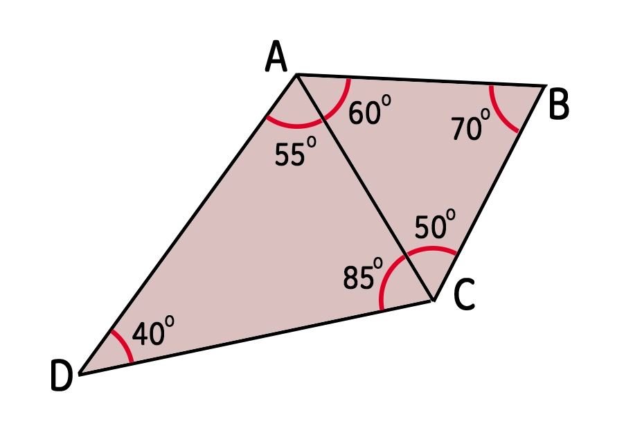
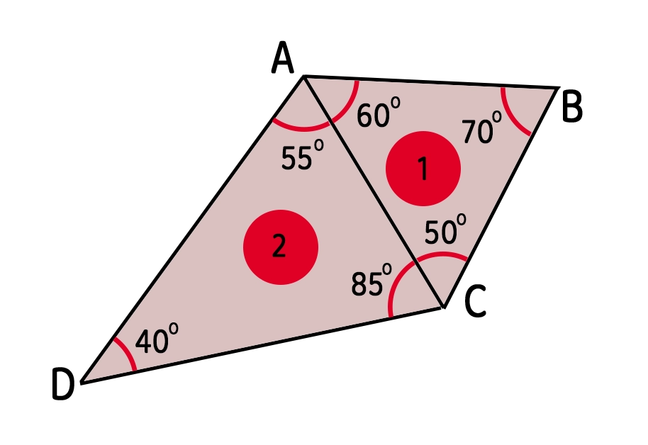
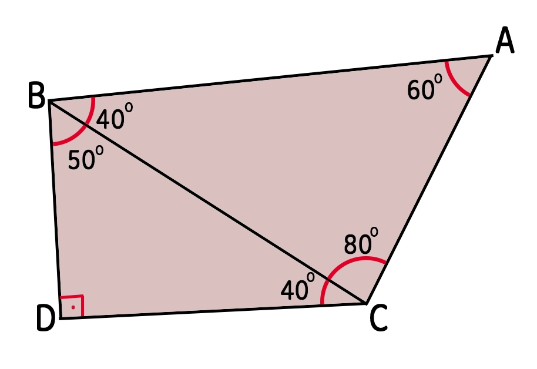
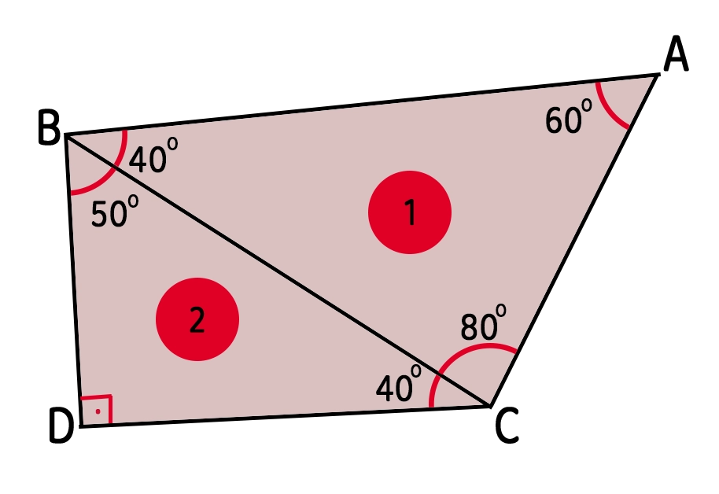

Bir üçgenin kenar uzunlukları arasında da üçgenin kenar uzunlukları ile bu kenarların karşısındaki açıların ölçüleri arasında da doğrudan bir ilişki vardır. Bu etkinlikte bu ilişkileri ele alacağız.
Üçgen Eşitsizliği
Herhangi iki kenarın uzunlukları toplamı üçüncü kenardan büyük, farkı ise üçüncü kenardan küçük olmalıdır.
Kenar–Açı İlişkisi
Bir üçgende uzun kenarın karşısında büyük açı, kısa kenarın karşısında ise küçük açı bulunur.
P ve R noktaları arasındaki uzaklık z olsun. P merkezli x yarıçaplı bir çember ile R merkezli y yarıçaplı bir çember çizildiğinde, bu iki çember ancak belirli koşullarda kesişir ve bir üçgen oluşturur. Kaydırıcılarla x, y ve z değerlerini değiştirip hangi durumlarda üçgen oluştuğunu gözlemleyin.
Aşağıda A köşesini kaydırıcılarla hareket ettirerek üçgenin şeklini değiştirin. Her kenarın uzunluğu ile karşısındaki açının ölçüsü canlı olarak hesaplanıp tabloda gösterilir.




- Bir üçgende, herhangi iki kenarın uzunlukları toplamı üçüncü kenardan büyük, farkı ise üçüncü kenardan küçük olmalıdır: \( |x-y| < z < x+y \).
- Bu koşul sağlanmıyorsa verilen üç uzunlukla üçgen oluşturulamaz.
- Bir üçgende uzun kenarın karşısında büyük açı, kısa kenarın karşısında küçük açı bulunur.
- Eş uzunluktaki kenarların karşısında eş açılar bulunur (ikizkenar ve eşkenar üçgenlerle bağlantılı bir özelliktir).
- Birden fazla üçgenin bulunduğu birleşik şekillerde önce üçgenleri ayrı ayrı ele alarak her bir üçgendeki sıralamayı yazmalıyız.